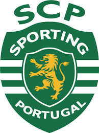
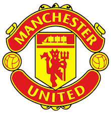
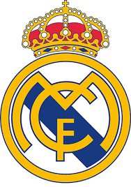
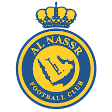
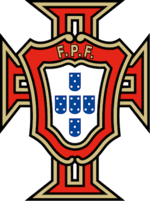

DADOS DA CARREIRA
SPORTING (PORTUGAL)2003

- JOGOS: 31
- GOLS: 5
- ASSISTÊNCIAS: 6
- TITULOS PELA EQUIPE: •Supertaça de Portugal(2002).
MANCHERSTER UNITED(INGLATERRA)
2003/2009 E 2021

- VALOR DA TRANSFERÊNCIA: 15M de euros
- JOGOS: 346
- GOLS: 145
- ASSISTÊNCIAS: 64
- TITULOS PELA EQUIPE:• Premier League (2006/07, 2007/08 e 2008/09); • Taça da Liga Inglesa (2005/06 e 2008/09); • Supertaça da Inglaterra (2007); • Taça da Inglaterra (2003/04); • Liga dos Campeões (2007/08); • Mundial de Clubes (2008).
REAL MADRID(ESPANHA)
2009/2018

- VALOR DA TRANSFERENCIA: 94M de euros
- JOGOS: 438
- GOLS: 450
- ASSISTÊNCIAS: 131
- TITULOS PELA EQUIPE:• Liga dos Campeões (2013/14, 2015/16, 2016/17 e 2017/18); • Mundial de Clubes (2014, 2016 e 2017); • Supertaça da UEFA (2014 e 2017); • Supertaça da Espanha (2012/13 e 2017/18); • Copa do Rei (2010/11 e 2013/14); • Campeonato Espanhol (2011/12 e 2016/17).
JUVENTOS(ITALIA)
2018/2021

- VALOR DA TRANSFERÊNCIA: 100M de euros
- JOGOS: 134
- GOLS: 101
- ASSISTÊNCIAS: 22
- TITULOS PELA EQUIPE: • Campeonato Italiano (2018/19 e 2019/20); • Supertaça da Itália (2018 e 2020); • Copa da Itália (2020/21).
AL NASSR (ARABIA SAUDIDA)
2021/ATUALMENTE

- VALOR DA TRANSFERÊNCIA: 20M de euros
- JOGOS: 68
- GOLS: 62
- ASSISTÊNCIAS: 17
- TITULOS PELA EQUIPE: • Copa dos Campeões Árabes(2023)
PORTUGAL

- JOGOS: 212
- GOLS: 130
- ASSISTENCIAS: 34
- TITULOS PELA EQUIPE:• EURO (2017); • Liga das Nações da EUFA (2019).
RECORDES

- Mais jogos nas competições de clubes da UEFA: 197
- Mais golos nas competições de clubes da UEFA: 145
- Mais golos na UEFA Champions League: 140
- Mais golos numa só edição da UEFA Champions League: 17 (2013/14)
- Mais golos na fase a eliminar da UEFA Champions League: 67
- Melhor marcador da UEFA Champions League: 2007/08, 2012/13, 2013/14, 2015/16, 2016/17, 2017/18
- Mais jogos na UEFA Champions League: 183
- Mais vitórias na final da UEFA Champions League: 5
- Único jogador a marcar em três finais da UEFA Champions League
- Único jogador a marcar em 11 jogos seguidos na UEFA Champions League
- Mais prémios de Melhor Jogador da UEFA: 4 (2008, 2014, 2016, 2017)
- Mais presenças na Equipa do Ano dos utilizadores do UEFA.com: 15 (2004, 2007 a 2020)
- Mais presenças na fase final do EURO: 5
- Mais jogos na fase final do EURO: 27
- Mais jogos no EURO (incluindo qualificação): 68
- Mais golos na fase final do EURO: 14
- Mais golos no EURO (incluindo qualificação): 55
- Único jogador a marcar três golos em fases finais diferentes do EURO: 2012, 2016 e 2020
- Único jogador a marcar golos em cinco fases finais do Mundial: 2006, 2010, 2014, 2018, 2022
- Primeiro jogador a marcar dez hat-tricks por uma selecção
- Mais jogos na fase final do EURO e do Mundial: 49
- Mais golos na fase final do EURO e do Mundial: 22
- Mais jogos por uma selecção: 209
- Mais golos por uma selecção: 130
RECORDES DA EUFA
RECORDES POR PORTUGAL
TITULOS INDIVIDUAIS

- • Melhor jogador do mundo pela FIFA (2008);
- Prêmio FIFA Ferenc Puskás (2009);
- Melhor jogador da Premier League (2006/07 e 2007/08);
- Melhor jogador do Campeonato Espanhol (2012/13 e 2013/14);
- Bola de Ouro (2008, 2013, 2014, 2016 e 2017);
- The Best FIFA Football Awards (2016 e 2017)
- Melhor jogador do Campeonato Italiano
- Melhor jogador do mundo pela FIFPro (2008, 2013, 2014, 2016 e 2017)
- Chuteira de Ouro da UEFA (2007/08, 2010/11, 2013/14 e 2014/15)